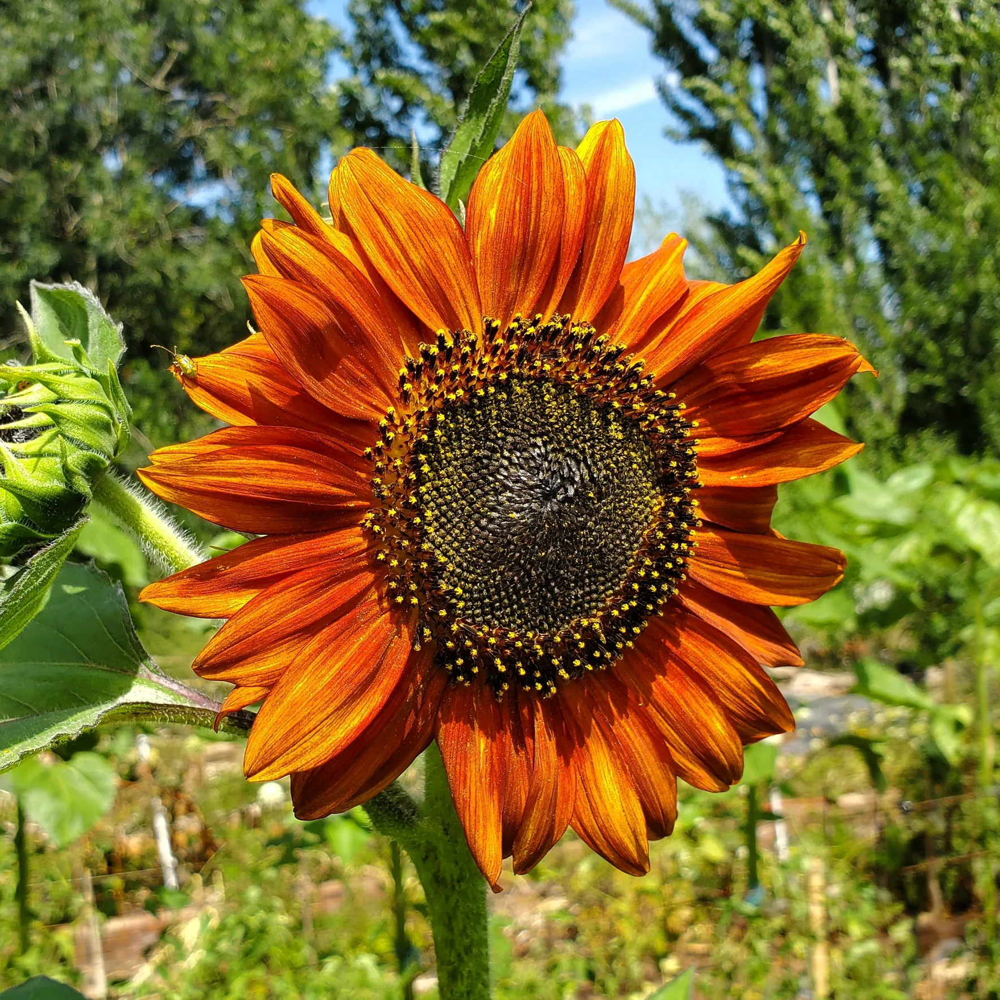

| |Nombre| | |Locación| | |Tipo| | |Imagen| |
|---|---|---|---|
| |Rosa| | |Jardines, Parques| | |Florperenne| | |
| |Tulipán| | |Europa,Asia| | |Bulbosa| | |
| |Girasol| | |América del Norte y del Sur| | |Anual| |  |
| |Orquídea| | |Regiones tropicales| | |Epífita o Terrestre| | |
| |Lirio de los valles| | |Europa, Asia, Norteamérica| | |Bulbosa| | |